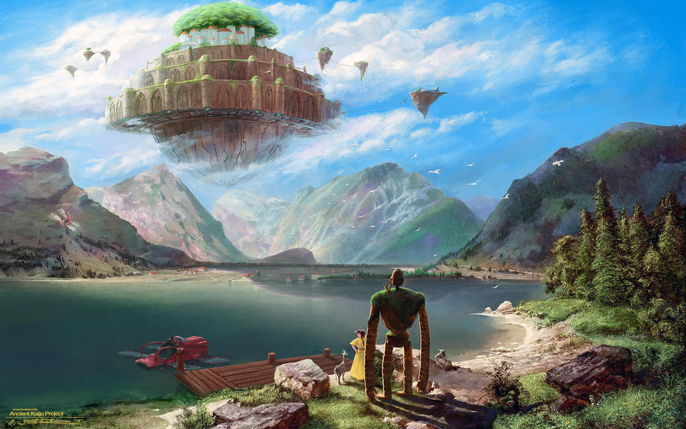
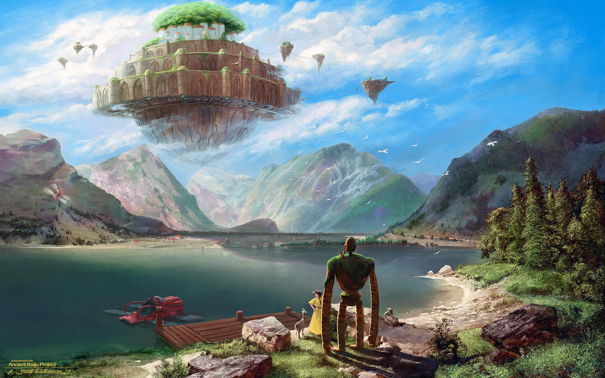

I believe that fantasy in the meaning of imagination is very important.
We shouldn't stick too close to everyday reality but give room to the reality of the heart, of the mind, and of the imagination.
- Miyazaki Hayao

I believe that fantasy in the meaning of imagination is very important.
We shouldn't stick too close to everyday reality but give room to the reality of the heart, of the mind, and of the imagination.
- Miyazaki Hayao
Studio Ghibli, Inc. (株式会社スタジオジブリ Kabushiki-kaisha Sutajio Jiburi), known simply as Ghibli, is a Japanese animation film studio headquartered in Koganei, Tokyo. They were founded on June 1985 by animator, director, producer, screenwriter, author, and manga artist Hayao Miyaszaki; Japanese film director Isao Takahata; and producer Toshio Suzuki. Over the last 37 years, they've created 20 feature films (and counting), plus several short films, and television commercials.
Takahata and Miyazaki first met in the 1960s when they both worked for Japanese animation studio Tôei Dôga. They worked together for more than a decade, but it wasn't until the mid 1980s that they decided to start their own venture. In 1985—with funding from Tokyo-based publishing company Tokuma Shoten—Takahata, Miyazaki, and Suzuki founded Studio Ghibli, a small production studio in the suburbs of Tokyo.
The trio’s first feature film was Nausicaä of the Valley of the Wind, a post-apocalyptic fantasy adventure based on a manga of the same name published by Miyazaki. Released under the Tokuma Shoten name, it was a success, and prompted the small team to begin their next production. In 1986, Studio Ghibli released Laputa: Castle in the Sky, the story of a young orphan boy and a farm girl who embark on a journey to explore the mystical floating city of Laputa.
 

Unlike other animation studios at the time, Studio Ghibli didn’t care for international commercial success at first. The makers purely wanted to use their art to explore the depths of the human experience, and tell heart-felt, poetic stories. Void of traditional villains, even the Ghibli “baddies” are somewhat likable, each with their own backstory to explain their behavior.
The name “Ghibli” refers to the Italian word for the “Hot Sahara Wind.” The name is fitting because the studio wanted to “blow new wind through the anime industry.” The name also refers to Miyazaki’s love for Italy and planes. He was inspired by the Caproni Ca.309 Ghibli, a surveillance aircraft that was designed in Italy during the Second World War.
Studio Ghibli produced 15 of the highest-grossing anime films in Japan. Although My Neighbor Totoro is arguably Ghibli’s most widely recognized film (even its logo features the lovable Totoro character), the studio’s first real success was Kiki's Delivery Service. First screened in 1989, it was a number one hit in Japanese theaters that year. Three years later in 1992, Porco Rosso topped Disney’s Beauty and the Beast at the Japanese box office. Then in 2003, Ghibli’s iconic Spirited Away became the first non-English-language film to win the Oscar for Best Animated Film. The first film to gross $200,000,000 before opening in the U.S., Spirited Away became the highest grossing film ever released in Japan.
In 1988, Ghibli released Grave of the Fireflies. One of the studio’s most profoundly beautiful works, it was based on Akiyuki Nosaka's heartbreaking semi-autobiographical short story of two children struggling to survive during WWII. Surprisingly, the film was only moderately successful at the Japanese box office as it was deemed too jarring for young audiences. However, Grave of the Fireflies later received universal critical acclaim, and it even scores 100% on Rotten Tomatoes (an American review-aggregation website for film and television).
If you want to know more about the history of Studio Ghibli, you can visit the Ghibli Museum, located in Mitaka, Tokyo. And if you’re feeling inspired to watch one of the studio’s classics, you can now stream Spirited Away, Howl’s Moving Castle, My Neighbor Totoro, and many more Ghibli films on Netflix or HBO Max.